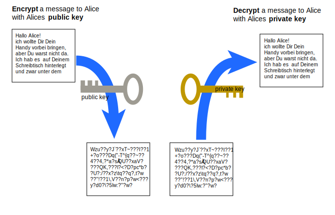

▻
1 Deploying with git
heroku is one "Platform as a Service" provider that offers to host your rails app. Heroku uses git to push the code to the production server.
(See also Railsbridge Installfest: Create A Heroku Account and Railsbridge Installfest: Deploy A Rails App )
- create an account on https://heroku.com
- add your public key to your heroku account
- install the heroku toolbelt on your local development machine
in your rails app, which is already using git:
- heroku create
- make some changes in the Gemfile (rubyracer, pg instead of sqlite)
- don't forget to commit all changes!
- git push heroku master
- heroku run rake db:migrate
- heroku open
- heroku logs
That's it. You should now have an app with a very strange URL, like http://mighty-shore-1497.herokuapp.com/
▻
2 Public Key Authentication in SSH
(See also Railsbridge Installfest)

- learn about ssh
- if you have a public + private key pair
id_rsaid_rsa.pub
- and your private key is on your local computer
- stored in
~/.ssh/id_rsa
- stored in
- and your public key is on the server
- stored in
~/.ssh/authorized_keys2
- stored in
- then ssh will let you log in without giving a password

▻
2.1 deploying with a deploy-user
- alice and bob both want to deploy project x
-
deploy_xis set up as an account on the server - alice adds her public key to
~deploy_x/.ssh/authorized_keys2 - bob adds his public key to
~deploy_x/.ssh/authorized_keys2 - both can deploy (from different machines) using the same capistrano setup
▻
2.2 authorized_keys2
ssh-rsa AAAAB3NzaC...2EAAAABI== alice@fh-salzburg.ac.at
ssh-rsa AAAAB8NzaC...DVj3R4Ww== bob@fh-salzburg.ac.at
▻
3 How to run Rails
- WEBrick (built in web server)
- apache/nginx + mod_passenger
- apache/nginx + mod_passenger + capistrano
▻
3.2 mod_passenger
- install mod_passenger
- upload your code
- create files not in git (e.g. database.yml)
- apache config:
- set
DocumentRoottopublic/ - set
RailsEnv production
- set
- restart apache
- if you change the code:
- touch
tmp/restart.txtto force reload of code
- touch

▻
4.1 WARNING
- capistrano is a command line tool
- you need to read the output!
- you need to read every line of the output!
- you seriously need to read every line of the output!
▻
4.2 capistrano assumptions
- You are using SSH to access your remote machines
- your remote servers have a shell called sh
- authentication through password or public key
- Capistrano reads its instructions from a
capfile
▻
4.3 how to install
$ sudo gem install capistrano
Fetching: capistrano-2.13.5.gem (100%)
Successfully installed capistrano-2.13.5
1 gem installed
$ $ cap install
mkdir -p config/deploy
create config/deploy.rb
create config/deploy/staging.rb
create config/deploy/production.rb
mkdir -p lib/capistrano/tasks
create Capfile
Capified
▻
4.6 prepare capistranoe
$ cap production git:check
$ scp config/database.yml deployuser@server:/var/www/.../shared/config
$ scp config/secrets.yml deployuser@server:/var/www/.../shared/config
$ cap production deploy
▻
4.7 run a capistrano task
$ cap production deploy
$ cap display_free_disk_space
* 2012-11-29 05:34:45 executing 'display_free_disk_space'
* executing "df -h"
servers: ["multimediaart.at"]
Password: ****
[multimediaart.at] executing command
** [out :: multimediaart.at] Size Used Avail Use% Mounted on
** [out :: multimediaart.at] 98G 70G 24G 75% /var/www
command finished in 165ms
▻
4.8 capistrano folders
read the logfile, try to find out how capistrano lays out the folders
- current --> links to a release
- release
- 20121201113038
- 20121201150544
- shared
- assets
- bundle
- log
- pids
- system
▻
4.9 my first deploy
$ cap deploy:setup
$ cap deploy:check
$ cap deploy:cold
$ cap deploy:upload FILES='config/database.yml'